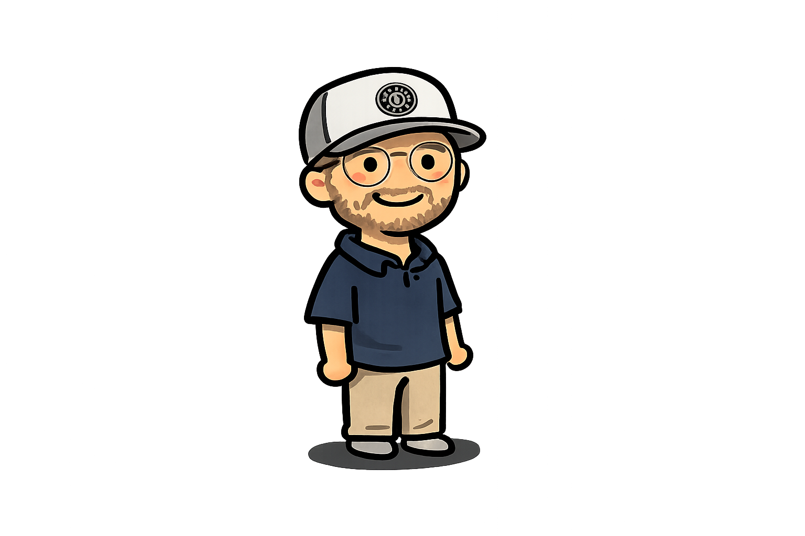
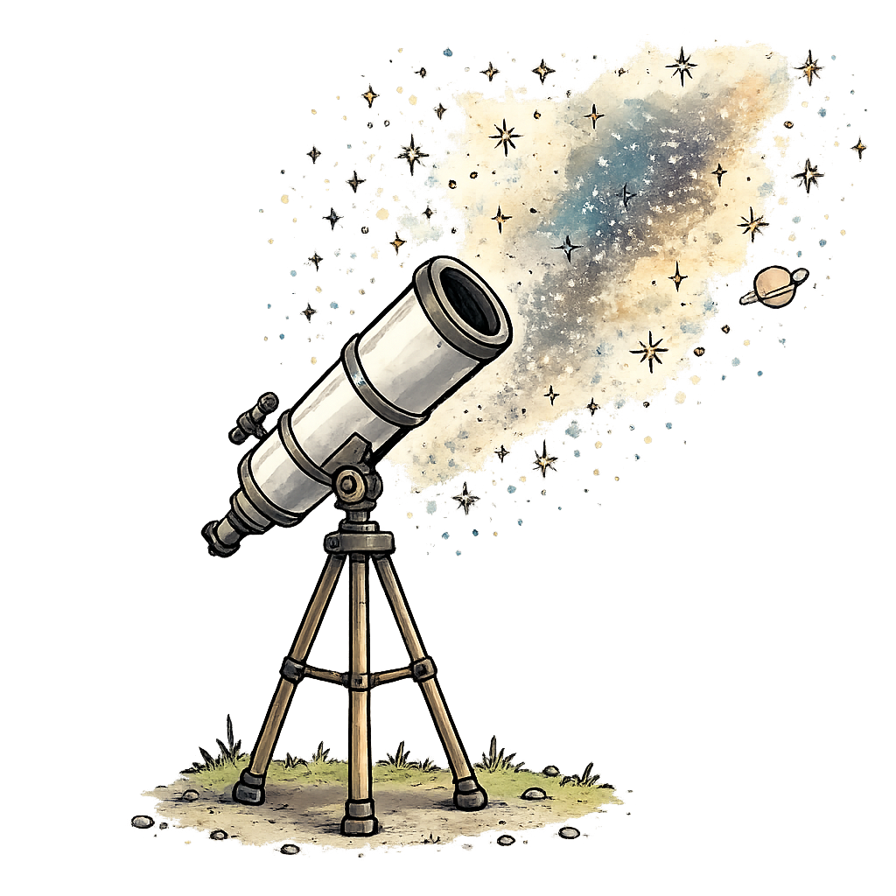

Hi, I'm Zack.
I spend a lot of time noticing things. This site is a collection of work, ideas, and experiences that shaped how I think.
Scroll to keep going

I think curiosity is one of the best teachers.
Space, nature, questions, long conversations -- I've always been drawn toward things that make the world feel bigger.
Explore my thoughtsPeople rarely say exactly what they mean.
A lot of my work has been learning how to spot hesitation, trust, identity, and the quiet reasons people get stuck.
Read an audience noteClarity can change how people feel.
I like turning complicated ideas into something people can connect with.
Noticing things can be useful when paired with action.
Work
Training as a growth system
Turning team frustration into a capability-building model. 1-2 min readThinking
New Year's Eve and the search for something real
What hollow rituals reveal about authenticity and culture. 4-5 min readPoint of View